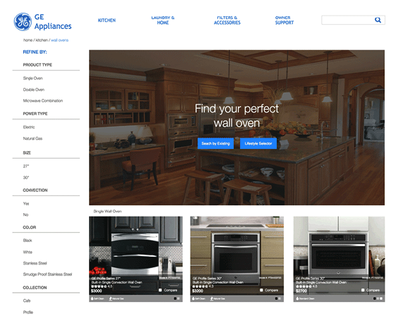
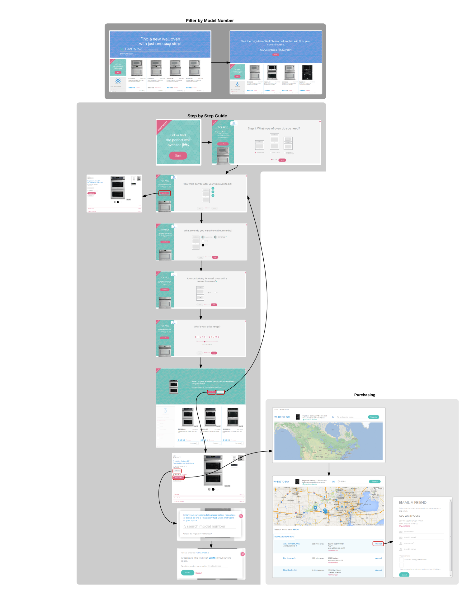
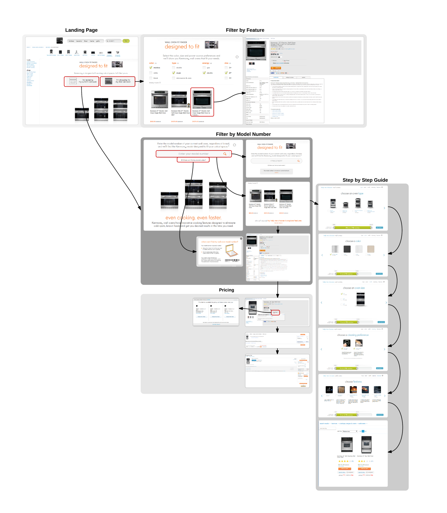

User research, Competitive analysis, Personas, Scenarios, and User journeys.
Project Details
Challenge: Make it easier for consumers to find the right wall oven in geapplience.com that not only fits in their existing wall space but has all the features they need to cook a delicious meal.
Company: General ELectric
Role: UX Research
Contribution
User Research
Competitive Analysis
Personas
Scenarios
User Journeys
Tools Used
Pen and Paper
InDesign
Axure
Whiteboard
Excel
word
Wall ovens can be difficult to shop for. They often look very similar and it there is no easy way to diffentiate between features. How can we make it easier for consumers to find the right wall oven that not only fits in their existing wall space but has all the features they need to cook a delicious meal.
A tool to help consumers find the perfect wall oven for their home. Users can enter an existing model number or take a short quiz to find a wall oven that works for their lifestyle.

Competitive Analysis
Using Nielsen's Usability Heuristics, I researched existing websites with similar tools to learn how current competitors address this problem as well as additional opportunities to improve this experience.
Frigidaire
Frigidaire offers the users three separate paths including:
Enter current model number to receive similar sized products
Step by Step: Select model based on desired features
Manually filter

Frigidaire Interaction Map
Findings and Analysis:
The site lacks user controls
Once the user completes the “quiz”, he/she is not allowed to edit any of the choices without restarting the process over again. This could be improved by allowing editing options once the quiz has been completed.
The provided images do not allow the user to see the product in context
The detailed images of each product are isolated and do not provide any context. This may be difficult for the user to understand/imagine how the wall oven will look in his/her own kitchen.
The site draws attention away from its overall goal.
The left sidebar contains a “learn more” button that takes the user away from the quiz and into a detailed product page. This does not open up in a new window and results in the user losing any completed work.
The site lacks a sense of completion
After completing the quiz and/or entering the model number, the user receives filtered results without much explanation of the results. This could be improved by creating a better results page and informing the user the specific wall oven features that the user should be looking for.
Kenmore
Kenmore offers the users three separate paths including:
Enter current model number to receive similar sized products
Filter by Feature
Step by Step: Select model based on desired features

Kenmore Interaction Map
Findings and Analysis:
Attention is focused on the images of the wall ovens rather than the model number entry
Once on the enter model number page, the images of the ovens are directly in the middle of the page. The user is drawn to the images and does not immediately recognize that the enter model number is supposed to be the focus. Additionally, the images are not buttons and may cause confusion for the user. The enter model number should be made the focus of the page.
Animation lets the user know that the filter is working
As users select different filters, the results “scramble.” Visually, this lets the user know that it is automatically updating results based on input. However, the “scramble” animation may not be the correct animation and can cause feelings of motion sickness with some users.
Number results adjacent to features are confusing
The numbers adjacent to the feature type are added as users select different filter options. These numbers refer to the number of ovens that match that particular feature. This is not really intuitive, as users care more about the number of ovens that fit all of their features.
Personas AND Scenarios
I created four personas and scenarios to represent the different users that would be using the site. I developed the personas to have a wide range of expectations and skill sets to ensure that the site would work effiently and effectively for a wide range of users.
Customer journey map and user journey
Based on the personas and scenarios, I created a set of user journeys to inform how each user would enter and use the site. Because the personas have different expectations when visiting the site, they may not interact with the site in the same way. The user journeys were used to make sure that these differences were accounted for and developed acccordingly.
Journey map
Sketching
Based on the user research, I sketched different design ideas that could help the user navigate through the wall oven buying process. The options included a social, a filter first, and a lifestyle walkthrough approach.
Prototype
My final deliverable was a high fidelity prototype developed in Axure. I incoporated three main elements: the ability to search for a wall oven by model number, find a wall oven through a lifestyle quiz and advanced filter option.
Homepage and Select by Model ID
Upon entering the homepage, the user has the option to enter an existing model id or select the lifestyle selector and answer a few questions to help narrow their wall-oven choices. Advanced users who have an idea of the collection or model they want can use the search or advanced filter to find a specific oven.
Lifestyle Selector
After entering the model id, the user can choose to answer the lifestyle questions to further narrow down the wall-oven options. By adding this opportunity, users will not feel like they need to start the process over again. In addition, the site can use the information gained from the existing model number as well as the lifestyle questions to help the user find the perfect wall-oven that fits their needs.
Results Page
After answering the lifestyle answers, the user is brought to a results page that lists the types of features that will work best for their needs. This can help the user navigate through the often technical wall-oven features. While many sites have advanced filters that may dead-end the user with no search results, this is avoided by creating a "best match", similar to online dating sites. Users are presented with the wall-ovens with the "best fit" for their lifestyles. In addition, the wall-ovens are shown within a kitchen context. This can help the user imagine what the wall-oven will look like in their own home.
Summary
By incorporating these new features and work-flow, I was able to simplify the wall-oven searching process and help consumers not only find a wall-oven that fits their existing wall space but find a wall-oven that meets their specific needs.